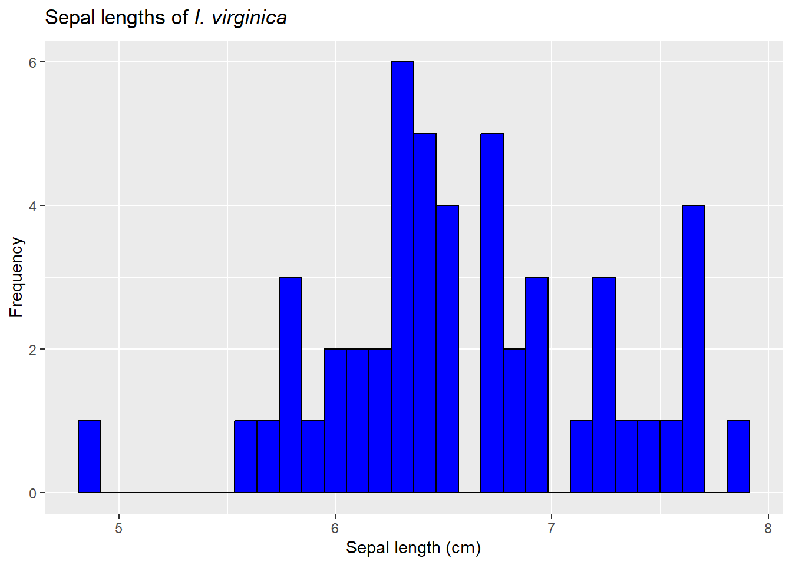
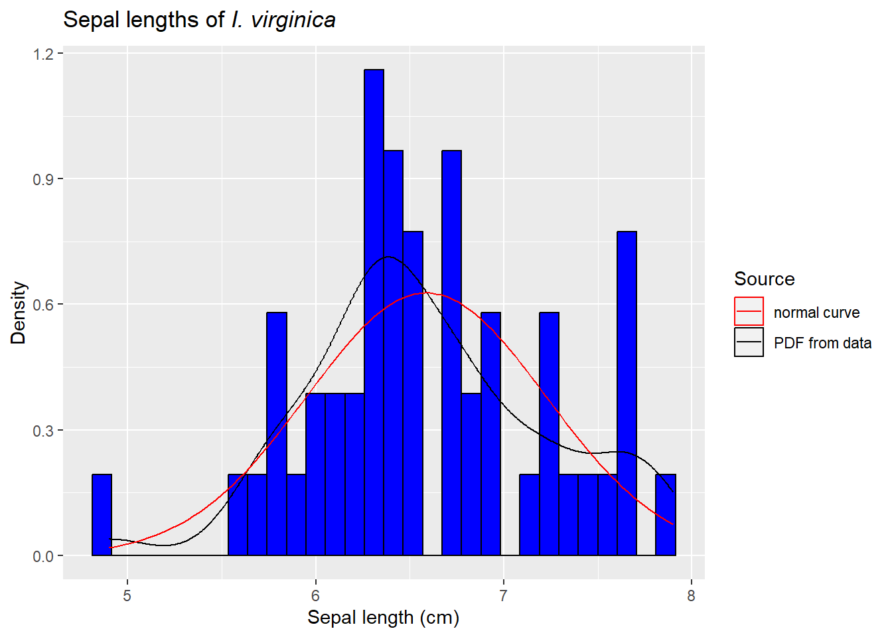
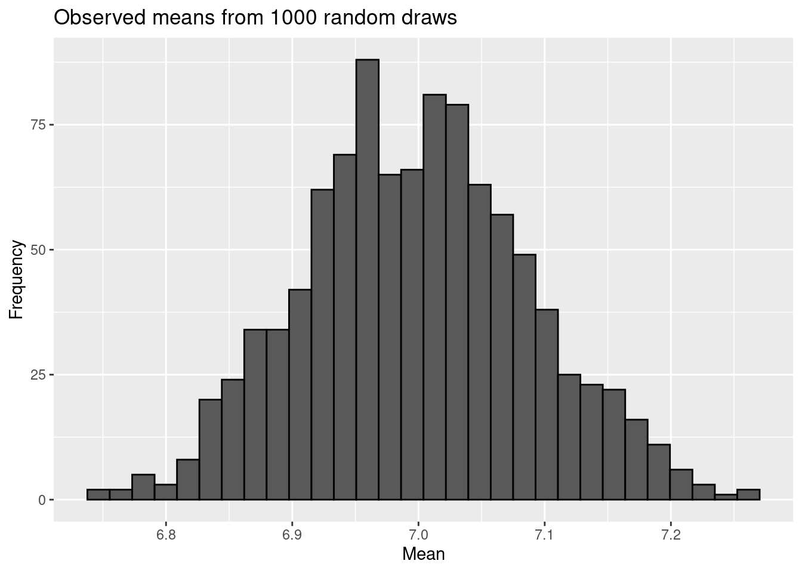

In this chapter will build on our introduction to significance testing by considering tests for continuous data collected on one trait from a single population. This will also allow/require us to more fully define normal distributions, which we have already started to discuss.
Example
Let’s return to our iris data and focus on sepal lengths of I. viriginica.
`stat_bin()` using `bins = 30`. Pick better value with `binwidth`.

What if we wanted to test if the height was equal to a certain value like 7 cm?
We can’t, and it’s not.
Height is a random variable. It differs among individuals (see above), so it isn’t equal to any specific value. This may seem obvious, but it’s an important step in understanding hypothesis testing. Many students also struggle with this, but most are with the fact we learned about hypothesis testing focusing on proportions (remember the last chapter?). When we focused on binomial data, it was obvious a single draw could not be 2 things - it was a success or failure, and we focused on the relative occurrence of those.
Similarly, for continuous numeric data (remember: data that can on any value in a given range), we need to focus on describing the distribution of the data. If we do that, we might want (and be able to test) if, for example, the mean height of I. virginica is equal to 7 cm. In fact, we typically focus on the mean of the distribution (one of measures of central tendency)
To do this, we need to do what we did with binomial data: develop a null hypotheses, use it to construct a null distribution, and compare our data to it see how unusual it is (and get a p-value).
What is our null hypothesis for this example?
For this example, we are focused on a two-tailed test (we are asking if the mean is equal to a certain value), so we have
\[
\begin{split}
H_O: \mu_{height} = 7 \ cm \\
H_A: \mu_{height} \neq 7 \ cm
\end{split}
\]
Now that we have a null hypothesis, we need to test it. We can do this by simulation. Let’s make a distribution where the \(\mu_{height} =7 \ cm\), then draw samples from it and see how rare it is to get what we actually observed in the data…which was
Seems easy enough, but what distribution do we draw from? For our binomial data we knew exactly what to parameterize - that’s because the entire distribution is described by the parameter p (go back to the last chapter and note we can find the spread using this one variable as well!).
If you remember the central limit theorem, you might realize the distribution of the data does not matter in some ways. No matter what it looks like, the means of the data will tend towards normality. However, we still need to describe it to simulate our draws.
It turns out the shape of the data itself appears fairly normal. So far we’ve said normal distributions
are roughly symmetric, with tails on either side. Values near the middle of the range are more common, with the chance of getting smaller or larger values declining at an increasing rate
95% of the sample is within \~2 standard deviations of the mean (and for our mean of means, 95% of the data is within 2 standard errors)
Warning: The dot-dot notation (`..density..`) was deprecated in ggplot2 3.4.0.
ℹ Please use `after_stat(density)` instead.
`stat_bin()` using `bins = 30`. Pick better value with `binwidth`.
It does appear to be fairly symmetric and peaked in the middle. It turns out normal distributions (finally defined below!) are very common in nature.
Just like the binomial data, a normal distribution can be described using a formula. The formula has 2 parameters that define the shape of the distribution. \(\mu\) defines the center of the distribution, and \(\sigma^2\) describes its spread. The formula for the probabilty density function is
This looks complicated, but remember: this is just an equation for describing the likelihood of outcomes in a probability space! The first part \(\sqrt{2\pi\sigma^2}\) arises from trying to work with a curve. To understand the rest, lets take the ln of both sides
This may not look like it helps much, but we now have the formula for a straight line, \(y=mx+b\), where
\[
\begin{split}
y= \ln(f(x)) \\
b = - \frac{1}{2\sigma^2}\\
m = -\ln(\sqrt{2\pi\sigma^2})\\
x = (x-\mu)^2
\end{split}
\]
In other words, our independent variable is the squared distance from the mean (so all positive)! Note both the y-intercept (the amplitude) and slope (shape) depends on how spread out the data is (\(\sigma^2\)). Note in general when ln(y) decreases linearly with x, y decreases at a constant proportional rate with x. So we can say a normal random variate is any random variable in which the probability of an observation declines in proportion to its squared deviation from the mean (µ).
`stat_bin()` using `bins = 30`. Pick better value with `binwidth`.

Note it fits fairly well, so we’ll use it for our sampling experiment. To do so, we’ll take 50 draws (since we had a sample size of 50) from a normal distribution, find means for each draw, then consider their distribution.
ggplot(sampling_experiment,aes(x=observed_mean)) +geom_histogram(color="black") +labs(title="Observed means from 1000 random draws",x="Mean",y="Frequency")
`stat_bin()` using `bins = 30`. Pick better value with `binwidth`.

Now let’s see how that compares to what we actually saw.
sampling_experiment$compare =ifelse(abs(sampling_experiment$observed_mean-7) >=abs(mean(iris[iris$Species =="virginica","Sepal.Length"])-7), 'as or more extreme', 'not as or more extreme')sampling_experiment$compare <-factor(sampling_experiment$compare)levels(sampling_experiment$compare) <-c(levels(sampling_experiment$compare), "as or more extreme")ggplot(sampling_experiment,aes(x=observed_mean, fill=compare)) +geom_histogram(color="black") +labs(title="Observed means from 1000 random draws",x="Mean",y="Frequency") +scale_fill_discrete(drop =FALSE)
`stat_bin()` using `bins = 30`. Pick better value with `binwidth`.